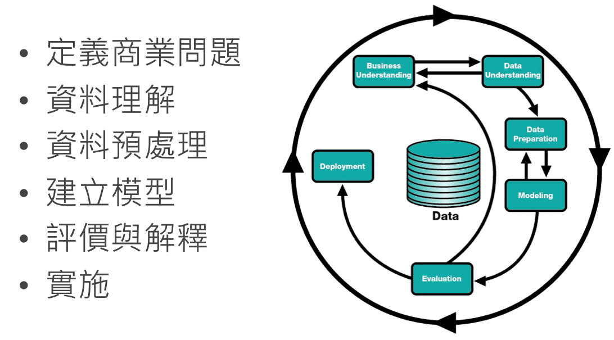
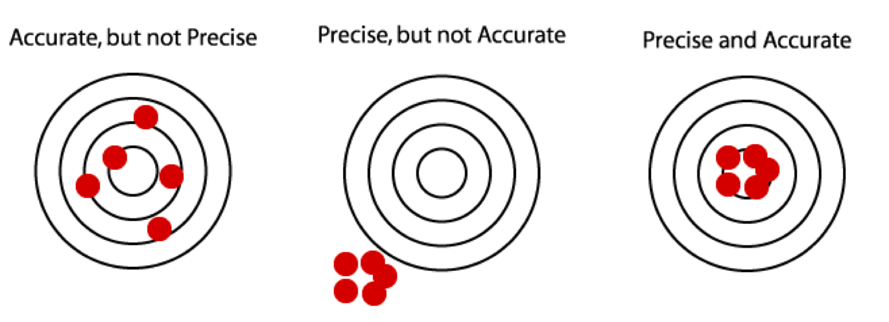
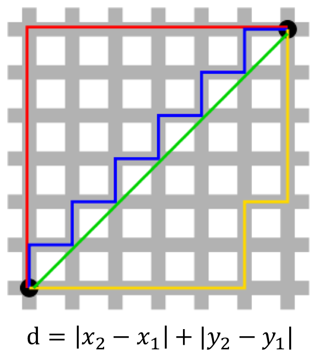
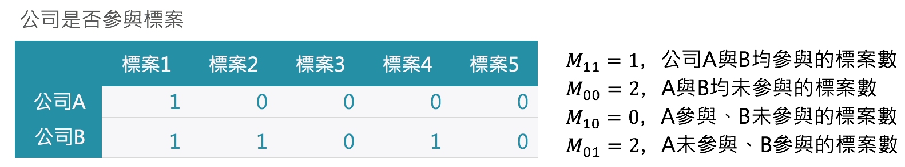
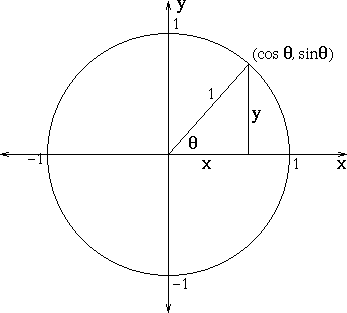
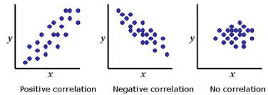
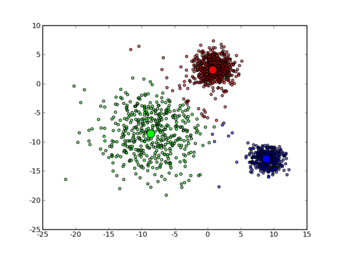
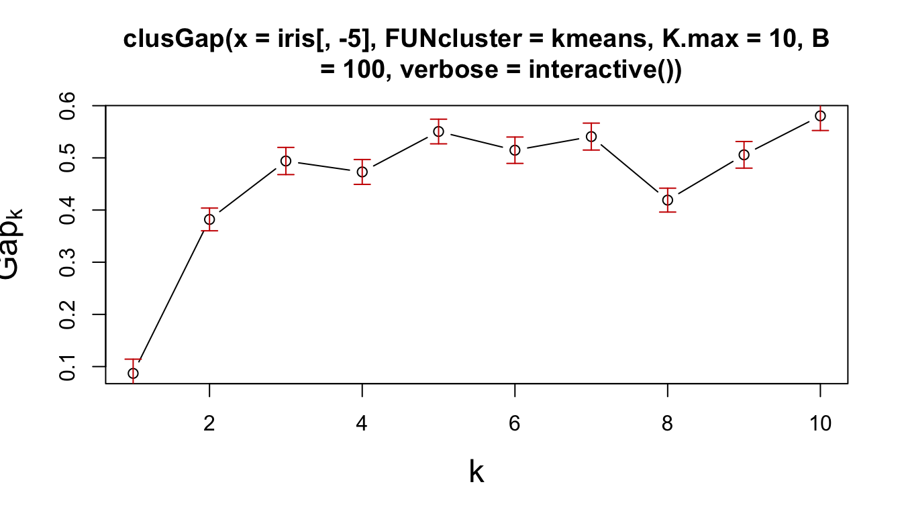
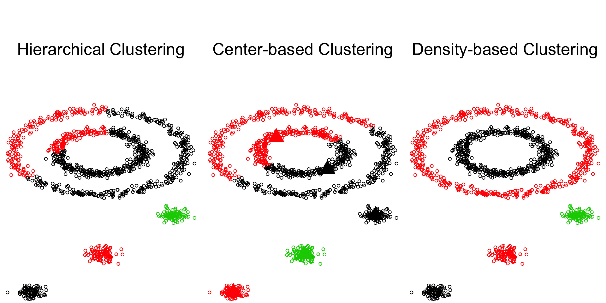
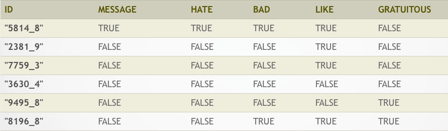

- 資料探勘心法篇 (Data Mining)
- 從一張發票談關聯性分析 (Association Analysis)
- 電子採購資料談叢聚分析 (Clustering Analysis)
- 電子投票記錄談分類法則 (Classification Analysis)
2018-06-21
課程大綱
開始之前，回顧一下
資料科學的 Hello World
Shiny, R語言的 Dashboard 製作工具
資料探勘心法篇
定義
分析歷史資料，萃取有價值的資訊，提供決策參考依據。
歷史資料- 資料庫
- observational vs. experimental data
有價值的資訊- 趨勢 (trend)：描述應變數 (y)
- 特徵 (patten)：描述自變數 (x)
- 相關 (relationship)：描述變數與變數 (y~x)
破除迷思
- 資料探勘不只是一種技術或一套軟體
- 資料探勘不是無所不能，它是
有極限的 - 資料探勘是從資料中挖掘有價值的
假設，沒辦法驗證假設 - 執行資料探勘者不僅僅是
資料分析師
CRISP-DM
資料採礦交叉行業標準過程
(Cross-Industry Standard Process for Data Mining)

核心概念
透過以下概念建立 Learning (IFTTT) 的準則
- 機率, 概似函數 (probability, lilelihood)
- 距離, 相似度 (distance, similarity)
- 成本, 風險 (cost, risk)
- 準確, 精密度 (accuracy, precision)
淺談機率
- 機率：事件A發生的機率，記為 \(P(A)\)
- 條件機率：事件A在已知事件B的條件下之發生機率，記為 \(P(A|B)\)
用機率大小的排序得知熱門商品
- \(P(奶綠) > P(檸檬汁) > P(冰淇淋紅茶)\)
用條件機率篩選重要因子
- \(P(會買霜淇淋) < P(會買霜淇淋 | 天氣熱)\)
- \(P(會讀哈利波特) < P(會讀哈利波特 | 會讀奇幻文學)\)
淺談距離
- 距離：物件A與B之間的距離，記為 \(D(A, B)\)
- 相似度：物件A與B之間的相似程度，記為 \(C(A, B)\)，一般來說相似度介於 [0, 1]，1 表示完全相似，0 表示完全相異
用距離做商品推薦
- 依據
商品規格或是訪客瀏覽行為計算兩台相機的距離
淺談風險
- 風險：事件發生與否的不確定性，風險 = 機率 x 成本
建構企業信用風險模型
- 違約機率模型 (PD)，譬如：決策樹模型
- 違約損失率模型 (LGD)
- 預期違約風險 (EL) = PD x LGD
淺談準確與精密度
- 準確度 (accuracy)：平均值與真實值之差距，又稱偏誤 (bias)
- 精密度 (precision)：獨立實驗數據分佈的「集中程度」，又稱偏差 (deviation)
資料探勘模型的評量標準
- 均方差： \(MSE(T) = Var(T) + Bias(T)^2\)

經驗行銷
- 大部分的情況下，資料探勘能做到的事，人都能做到
- 優秀店長的經驗甚至會比資料探勘結果更準確
- 但是，優秀店長很少見，至多熟識幾十、幾百位客戶
傳統行銷
- 傳統行銷是用背景資訊去篩選定義，
譬如：35-40歲、女性、已婚、有工作、育有兩子 - 群體夠大才能篩選出足夠多的受眾
- 相同背景的人，需要的東西不一定是一樣的。
傳統行銷的觀點是，透過廣告針對受眾加強商品形象，讓人想要購買。
資料探勘行銷
- 計算人與人之間的距離 (user-based)
- 計算商品與商品之間的距離 (item-based)
- 計算每一個人購買每一種商品的機率
- 計算每一個人要購買每種商品的最佳順序
- 沒有傳統行銷需要篩選特定受眾而忽略其他潛在客戶的問題 (譬如：50歲大叔買LV名牌包)
- 資料探勘系統的成功須考量：
資料量、使用者廣度、反應時間。
總之，何時需要資料探勘
- 小型商店靠店長的經驗
- 中型賣場靠傳統的行銷分析
- 大型商務中心需要引進資料探勘系統拉開同業差距
課程聲明
恭喜各位，這是不刪檔封測
有商業行為、企業內訓的需求請洽R 語言翻轉教室團隊
本課程專注在理解資料探勘方法的思路
強調R語言資料探勘的個人實作
不會詳述演算法細節
從一張發票談關聯性分析
基本概念
關聯規則 (Association rule)
- 分析不同品項之間的關係程度
常見問題如
- 如果一個消費者購買了產品A，那麼他有多大機會購買產品B？
- 如果他購買了產品C和D，那麼他還將購買什麼產品？
- 在店門口擺設X廣告，以增進Y產品的促銷活動成效。
肉眼觀察法
- 四筆交易紀錄
- \(\{\text{milk, bread}\}\)
- \(\{\text{beer, diapers}\}\)
- \(\{\text{milk, bread, butter}\}\)
- \(\{\text{bread}\}\)
- 關聯規則
- \(\text{milk} \Rightarrow \text{bread}\)
名詞定義
- 交易紀錄 (Transaction)
- 一名顧客所購買的物品清單： \(\{\text{milk, bread}\}\)
- 品項 (Item)
- 可購買的物品：\(\text{milk, break, beer, ...}\)
- 關聯規則 (Association rule)
- 物品之間的關聯：\(X \Rightarrow Y\)
- \(X\), \(Y\)又被稱為品項集 (itemset)
- \(X\) (LHS itemset) 和 \(Y\) (RHS itemset) 不能包含相同的物品
- \(X \Rightarrow Y\) 代表當 \(X\) 出現在一個交易紀錄時，\(Y\)也會出現
- 例： \(\text{milk} \Rightarrow \text{bread}\)
尿布與啤酒的都會傳說
支持度 (support)
- 給定
品項集\(X\), 有多少個比率交易紀錄包含 \(X\) 稱為 \(Supp(X)\) - 也就是X的出現機率，記為\(P(X) = \frac{X出現筆數}{交易紀錄筆數}\)
- 交易紀錄
- \(\{\text{milk, bread}\}\)
- \(\{\text{beer, diapers}\}\)
- \(\{\text{milk, bread, butter}\}\)
- \(\{\text{bread}\}\)
- \(Supp(\{\text{milk}\}) = \text{2/4}\)
- \(Supp(\{\text{milk, bread}\}) = \text{2/4}\)
置信度 (confidence)
- 給定
關聯規則\(X \Rightarrow Y\)，\(Conf(X \Rightarrow Y) = \frac{Supp(X \cup Y)}{Supp(X)}\) - 也就是在X
交易紀錄發生的狀況下，同時包含X與Y交易紀錄的條件機率，記為\(P(Y|X)\) - 交易紀錄
- \(\{\text{milk, bread}\}\)
- \(\{\text{beer, diapers}\}\)
- \(\{\text{milk, bread, butter}\}\)
- \(\{\text{bread}\}\)
- \(Conf(\{\text{milk} \Rightarrow \text{bread}\}) = \text{2/2} = 1\)
- \(Conf(\{\text{bread} \Rightarrow \text{milk}\}) = \text{2/3}\)
教機器做學習
- 交易紀錄
- \(\{\text{milk, bread}\}\)
- \(\{\text{beer, diapers}\}\)
- \(\{\text{milk, bread, butter}\}\)
- \(\{\text{bread}\}\)
- 規則及衡量指標
- \(X \Rightarrow Y\), \((Conf, Supp)\)
- \(\{\text{milk} \Rightarrow \text{bread}\} \text{, (2/2, 2/4)}\)
- \(\{\text{beer} \Rightarrow \text{diapers}\} \text{, (1/1, 1/4)}\)
- \(\{\text{milk, bread} \Rightarrow \text{butter}\} \text{, (1/2, 1/4)}\)
選擇強關聯規則
一個規則是否夠好，可用支持度與置信度衡量
- 規則的
支持度(support) 越高 => 越有影響 - 規則的
置信度(confidence) 越高 => 越準確
支持度和置信度的不足
一個強關聯規則，通常支持度和置信度值都高。
但反過來支持度和置信度值都高，卻不一定代表這條規則所指的交易紀律彼此間就一定存在著高相關性。
支持度和置信度的不足
- 假設100筆交易紀錄，60筆包含 milk、75筆包含 bread，共有40筆同時包含 milk, bread，可得
關聯規則：
\(\{\text{milk} \Rightarrow \text{bread}\}\): \((Supp = 60\%, Conf = 67\%)\)
- 但是上述關聯規則
置信度67% 卻低於bread的支持度75% ，即 \(P(\text{bread | milk}) < P(\text{bread})\)，也就是說購買 milk 反而會降低購買 bread 的機會。
增益值 (Lift)
- 為補足
支持度和置信度的不足，我們還需要檢查增益值(Lift)，亦即 \[Lift(X \Rightarrow Y) = \frac{Conf(X \Rightarrow Y)}{Support(Y)}\] 也就是\((X, Y)\)的相關性指標：\(Lift(X \Rightarrow Y) = \frac{ P(X,Y)}{P(X)P(Y)}\)
增益值＞1，表示X與Y呈現正相關，規則才具有實用性。增益值＝1，表示X與Y呈現不相關，結果與亂數取得方式相似。增益值＜1，表示X與Y呈現負相關，比亂數取得之結果更差。
關聯規則建立流程
- 從資料庫中找出
高頻項目集合(large itemsets)，且大於所設定之最低支持度(minimum support)。 - 接著，用前述步驟所產生的
高頻項目集合產生關聯法則，並計算其置信度，若高於所設定的最低置信度(minimum confidence)，則此規則確定成立。 - 最後，再計算
增益值以檢查規則的相關性。
練習
- 請完成
06-RDataMining-01-Association-Rule
電子採購資料談叢聚分析
基本概念
叢集分析 (cluster analysis)
「物以類聚」，將比較相似的物件聚集在一起，形成各個集群。
常見問題如
- 在電商網站中，用叢集分析歸納消費行為相似的會員，歸納其特徵做更適合的服務。
- 針對空間特徵做分群，得到較具主題性的地圖。
- 應用於資料精簡化時，以每個群集的中心點來代表該群集的所有資料特徵。
肉眼觀察法
如何定義距離？
歐式距離 (Euclidean distance)
歐幾里得空間中兩點間的直線距離

曼哈頓距離 (Manhattan distance)
投影到座標軸上的長度和（即紅線，亦等價於藍線與黃線）
- 曼哈頓距離適用於度量網格間距，譬如在市區A到B的距離。

用飛行時間當作距離
地圖上兩地的歐式距離，並非真實距離
用交通費當作距離
心的距離
如何定義相似度？
相似度 (similarity) 與相異度 (dissimilarity)
相似度：越大越像 vs.相異度：越小越像- 兩者可以用數學運算做變換
- 常見的
相似度常常介於0與1之間 - 定義
相異度： 1 -相似度 相似度/相異度可以視為距離指標的特例距離沒有值域的限制 \([0, \infty)\)
二元類別型變數
 - Simple Matching Coefficient (SMC): \(\frac{M_{11} + M_{00}}{M_{01} + M_{10} + M_{11} + M_{00}}\)
Jaccard Index: \(\frac{M_{11}}{M_{01} + M_{10} + M_{11}}\)
Jaccard 省略了\(M_{00}\)的訊息，WHY?
類別型變數 ==> Simple Matching Coefficient
- 使用者A：年齡：中年、職業：公務員、教育：大學、婚姻：未婚
- 使用者B：年齡：高齡、職業：自由業、教育：大學、婚姻：已婚
- SMC： \(\frac{相同的屬性個數}{常數} \propto 相同的屬性個數\)
標籤 ==> Jaccard Index
- 使用者A : {男性、單身、電玩、上班族}
- 使用者B : {男性、旅遊、電玩、學生}
- Jaccard Index: \(\frac{\left| A \cap B \right|}{\left| A \cup B \right|}\)
- J(使用者A, 使用者B) ： \(\frac{2}{6}\)
- \(v := \{i_{男性}, i_{單身}, i_{電玩}, i_{上班族}, i_{旅遊}, i_{學生}, i_{女性}, ...\}\)
- \(v_A = \{1, 1, 1, 1, 0, 0, 0, ...\}\)
- \(v_B = \{1, 0, 1, 0, 1, 1, 0, ...\}\)
利用爬蟲技術收集決標資料
利用爬蟲技術取得公司董監事名單
| id | name | parent | birthday | magnate |
|---|---|---|---|---|
| 00000000 | 復華廣告有限公司 | NA | 1976-05-24 | |
| 00000016 | 富台機械開發建設有限公司 | NA | 1979-04-30 | 王振林 |
| 00000022 | 泰煜建材股份有限公司 | NA | NA | |
| 00000037 | 茂盛工程有限公司（同名） | NA | 1978-07-08 | |
| 00000043 | 啟猛股份有限公司（無統編） | NA | 1984-05-22 | 鄭添發 |
| 00000058 | 詠詳鐵工廠股份有限公司（無統蝙） | NA | 1984-03-07 | 吳秋進,吳戴麗珍,謝素梅,吳秋龍 |
利用Jaccard Index 計算公司董監事相似度
| id | name | parent | birthday | magnate | |
|---|---|---|---|---|---|
| 555426 | 27229231 | 尚達塩業股份有限公司 | NA | 2005-05-30 | 吳秀里,周永紹,周博元,周碩良 |
| 1067348 | 70794974 | 上達糧業國際股份有限公司 | NA | 2002-01-08 | 吳秀里,周永紹,周博元,周碩良 |
數值型變數：Cosine Similarity
- \(X_1, X_2 \in \mathbb{R}^d\)
- Cosine Similarity： \(\frac {X_1 \cdot X_2}{\left\lVert X_1 \right\rVert \left\lVert X_2 \right\rVert}\)
- 
數值型變數：Correlation
- \(X_1, X_2 \in \mathbb{R}^d\)
- Let \(X_1' = \frac{X_1 - mean(X_1)}{sd(X_1)}\), \(X_2' = \frac{X_2 - mean(X_2)}{sd(X_2)}\), Correlation: \(X_1' \cdot X_2'\)
- 
數值型變數： \(L_p\)距離
又稱 Minkowski distance
- \(X_1 = (x_{1,1}, x_{1, 2}, ..., x_{1, d}) \in \mathbb{R}^d\)
- \(X_2 = (x_{2, 1}, x_{2, 2}, ..., x_{2, d}) \in \mathbb{R}^d\)
- \(L_p(X_1, X_2) = \left( \sum_{k = 1}^d {\left| x_{1, k} - x_{2, k} \right|^p} \right)^{1/p}\)
數值型變數： \(L_p\)距離
Gower's dissimilarity coefficient
同時考量類別型與數值型資料的相異度
\[ d(i,j) = \frac{1}{M}\sum_{k=1}^M {d_{ijk}} \]
如果第一個變數是數值型：
\[ d_{ij1} = \frac{\left|x_{i1} - x_{j1}\right|}{\left|\max{x_1}-\min{x_1}\right|} \]
如果第二個變數是類別型： \[ d_{ij2} = 1-\frac{\left| x_{i2} \cap x_{j2} \right|}{\left| x_{i2} \cup x_{j2} \right|} \]
Gower's dissimilarity coefficient
R functions
cluster::daisy(x, metric="gower")vegan::vegdist(x, method="gower")
如何挑選 Similarity
- 視目標與應用而定
- 利用1NN 分類的結果來評估 similarity 的品質(後述)
利用相似度解釋資料（主觀）
- 數值變數的baseline：
- 先標準化
- \(L_2\)距離
階層式分群法
階層式分群法 (hierarchical clustering)
樹狀圖 (dendrogram)
階層式分群法 (hierarchical clustering)
- 概念簡單，可用樹狀結構來表現整個計算過程
- 不需要事先決定要分幾個 clusters
- 不需要資料點的實際座標，只需要資料點兩兩之間的距離，就可以建構分群結果
- 缺點：很難處理大量資料
R packages
stats::hclustggdendro:Create Dendrograms and Tree Diagrams using 'ggplot2'- CRAN Task View: Cluster Analysis & Finite Mixture Models
階層式分群法 (hierarchical clustering)
分群流程
- 決定資料點之間的距離
- 將相鄰的資料點合併成一個 cluster
- 決定資料點與 cluster 之間的距離
- 決定 cluster 與 cluster 之間的距離
- 由近到遠依序合併資料點與 clusters…
- 將結果依序繪製成
樹狀圖(dendrogram)
階層式分群法 (hierarchical clustering)
圖解UPGMA演算法
階層式分群法 (hierarchical clustering)
給定一個樹狀圖，如果要找出 k 個 clusters，就使用當全部資料被分成 k 個 clusters 的瞬間當成結果
階層式分群法 (hierarchical clustering)
如何評斷分群結果的好壞？
- 群內的距離要短
- 群間的距離要長
如何挑選分群的個數?
- 挑選分群結果好的群組個數
- 透過樹狀圖的高度差距來比較
分割式分群法 (Partitional clustering)
K-Means 分群法 (K-Means clustering)

K-Means 分群法 (K-Means clustering)
以中心點為計算基礎的分群方法 (center-based)
- 最基本的分群方法，快！
- 需要事先決定要分幾群
- 演算法的起始分群中心會影響分群結果
- 離群值會影響分群結果，需要預處理
- 不適用：非球狀、群集大小不均
- K-Means 一定會收斂，但只能局部最佳解 (local minimum)
R package
stats::kmenascluster: "Finding Groups in Data": Cluster Analysis Extended Rousseeuw et al.
K-Means 分群法 (K-Means clustering)
分群流程
- 先指定群聚的數目 k 與起始分群中心
- 利用
距離指標，定義誤差函數 - 藉著反覆疊代運算，逐次降低誤差值
- 直到目標函數不再變化，就達到分群的最後結果
K-Means 分群法 (K-Means clustering)
圖解kmeans演算法
如何評估 K-Means
- 如何評估分群結果好壞
- 如何決定分群數 k
Within-Cluster Sum of Squares
withinss: 各群集內的資料與中心點的距離平方和
Gap Statistic for Estimating the Number of Clusters

http://www.web.stanford.edu/~hastie/Papers/gap.pdfDBSCAN 分群法
DBSCAN
以密度為基礎的分群法 (density-based)
- 不需要事先決定要分幾群
- 可以分割出任意形狀的群集 (環形、文字)
- 會過濾雜訊 (noise)
- 需要給兩個參數：掃描半徑 (eps) 與半徑內最小包含點數 (MinPts)
- 缺點：不適用高維度資料、密度分佈不均、大量數據
R package
DBSCAN 分群法
分群流程
- 給定初始參數 eps (有無連接), MinPts (是否雜訊)
- 掃描所有的觀察值，找出核心點 (core)、邊界點 (border)、雜訊點 (noise)
- 移除雜訊點，將同是核心點的觀察值歸類到同一群

Density-based Clustering
圖解DBSCAN演算法
分群總結
分群就是:
- 欲對資料表中的觀察值賦予群集的標籤
- 定義資料間的距離 (distance / similarity）
- 套用分群演算法
- 驗證分群結果是否合理 (群組內差異小、組間差異大)
分群比較

練習
- 請完成
07-RDataMining-02-Clustering - 給進度超前朋友的小挑戰：台電得標公司資料分析
電子投票記錄談分類法則
基本概念
分類法則 (Classification Analysis)
- 按照分析對象的屬性分門別類加以定義，建立類組(class)
常見問題如
- 已知一般信用申請者的風險程度(高、中、低)，辨識新用戶的風險程度
- 透過基因表現量預測癌症類別
- 透過既有分類法則找除離群值 (肥羊客戶、異常行為)
常用方法
最近鄰居法 (K-NN) / 羅吉斯回歸 (logistic regression) / 支持向量機 (SVM) / 決策樹 (decision tree) / gradient boosted decision tree …
三種資料集
- 訓練集 (training dataset): 用來建立模型
- 驗證集 (validation dataset): 用來做模型篩選 (控制模型複雜度)
- 測試集 (testing dataset): 用來驗證最終模型
資料預測競賽
一般會提供兩包資料
- 訓練集
- 每個資料點均有：屬性 \(X\), 標籤 (類別型變數) \(Y\)
- 測試集
- 只有\(X\), 沒有\(Y\)
- 要用觀察到 \(X\) 的狀態下去預測 \(Y\)
Nearest-Neighborhood
Nearest-Neighborhood
標的類別是由最近的一個鄰居賦予
- 給定
測試集(testing data)，從訓練集(training data) 中找出與它最近的鄰居 - 用鄰居的類別猜測
預測集(testing data) 的類別
R package
class: Functions for Classification
K Nearest-Neighborhood (k-NN)
標的類別是由其最近的K個鄰居「多數表決」來決定
- 給定
測試集(testing data)，從訓練集(training data) 中找出與它最近的前K個鄰居 - 從這K鄰居的類別進行表決，用出現次數最多的類別猜測
預測集(testing data) 的類別

k-NN 常用於評量相似度指標
k-NN 沒有太多的假設
- 核心概念：物以類聚
- 需要用
距離/相似度決定鄰居 - k-NN 的效果和 similarity 的挑選很關鍵
- http://www.cs.ucr.edu/~eamonn/time_series_data/
Decision tree
決策樹
用樹狀結構建立規則輔助決策
R packages
Decision Tree: The Obama-Clinton Devide

如何建構一棵樹?
將資料依照每一階段不同的條件作循環切割
決策樹圖解

練習
- 請完成
08-RDataMining-03-Classification - 給進度超前朋友的小挑戰：投票記錄資料
總結
本課程結束之後，你該知道
- DM的核心精神：機率、距離、風險、誤差
- R語言是資料分析師的好幫手
- 資料探勘方法不是資料科學的全部
- 講師的聯絡方式：johnson@dsp.im
Text Mining
文字資料範例：ptt 笨版文章
作者frank9712520 (YFChen)看板StupidClown標題[健忘] 手機不見了...(代PO)時間Wed Dec 23 02:29:15 2015
以下是朋友要求代PO的...
剛剛手上拿著手機在回人FB訊息回到一半，突然被我媽叫離開原本的位置，我媽找完我沒
事後就忘記手機放在哪裡了
用我媽的手機打過去，打通了，沒鈴聲，我關了靜音...
還很興奮地跑到電腦前要用Google Device 放鈴聲找，結果他要我輸入密碼
這兩個多月來當兵每次休假就叫我換密碼，在加上與世隔絕了36天，根本不記得密碼了，
按忘記密碼，可是經過一連串驗證他要寄認證信到我的備用信箱(yahoo的) 但是到我發完
文已經過了快一個小時還時沒收到信...
乾........................
距離上次變更密碼...54天前（因為帳號久未活動，所以要求更改密碼）
http://i.imgur.com/2u4GMKb.jpg
啊就是手機不見才要登入啊...結果現在又要傳訊息到手機
文字資料的特色
- 容易獲取、俯拾即是
- 非結構化、長短不一、沒有明顯規律
- 挖掘規律是個挑戰
- 由各種字彙組成
- 常用的資料分析技術不容易套用在文字資料上
- 整理資料的挑戰較高
文字資料的結構化
- 找出方法將非結構化的文章轉變成結構化的資料
- 後續可針對各種應用問題，與其他ML或DM方法結合
文字資料的清理
- 移除不必要的字元，如空白、標點符號
- 統一大小寫
- 斷詞
- 英文資料使用空白做切割
- 中文資料可以使用Open Source斷詞引擎搭配詞庫
Term Document Matrix (TDM)
- 將文字資料在斷詞後，轉換為結構化資料的方式
- 以文章為單位
- 每篇文章是一筆資料
- 將文章中包含的詞彙當成屬性
- 運用大量布林屬性來標註文章中有沒有包含特定的詞彙
Feature Hashing
- 一種加速TDM處理效能的技巧
- TDM 需要建立： 字彙 ==> 屬性位置 的對應表
- Feature Hashing 運用Hashing Algorithm來做對應
- 喪失對屬性的解釋力

範例：Large Movie Review Dataset
TDM
- 
Sentiment Analysis via R, FeatureHashing and XGBoost
- 文章網址
- 運用文章中介紹的技巧搭配Machine Learning套件，即可達到Benchmark的準確度
n-gram
- TDM 是標記字彙有無在文章之中
- n-gram 是將相鄰的n個字彙視為一個字彙
n-gram 範例
剛剛手上拿著手機在回人FB訊息回到一半，突然被我媽叫離開原本的位置，我媽找完我沒事後就忘記手機放在哪裡了- 斷詞：
剛剛 手上 拿 著 手機 在 回人 FB 訊息 回到 一半 突然 被 我媽 叫 離開 原本 的 位置 我媽 找 完 我 沒事 後 就 忘記 手機 放在 哪裡 了 - TDM:
| 剛剛 | 手上 | 拿 | 著 | 手機 | 在 | 回人 | FB |
|---|---|---|---|---|---|---|---|
| 1 | 1 | 1 | 1 | 1 | 1 | 1 | 1 |
n-gram 範例
- 斷詞：
剛剛 手上 拿 著 手機 在 回人 FB 訊息 回到 一半 突然 被 我媽 叫 離開 原本 的 位置 我媽 找 完 我 沒事 後 就 忘記 手機 放在 哪裡 了 - 2-gram：
剛剛+手上 手上+拿 拿+著 著+手機 手機+在 在+回人 回人+FB FB+訊息 訊息+回到 回到+一半 一半+突然 突然+被 被+我媽 我媽+叫 叫+離開 離開+原本 原本+的 的+位置 位置+我媽 我媽+找 找+完 完+我 我+沒事 沒事+後 後+就 就+忘記 忘記+手機 手機+放在 放在+哪裡 哪裡+了 - TDM:
| 剛剛+手上 | 手上+拿 | 拿+著 | 著+手機 | 手機+在 | 在+回人 | 回人+FB | FB+訊息 |
|---|---|---|---|---|---|---|---|
| 1 | 1 | 1 | 1 | 1 | 1 | 1 | 1 |
練習
- 請完成
X4-RDataMining-04-Text-Mining